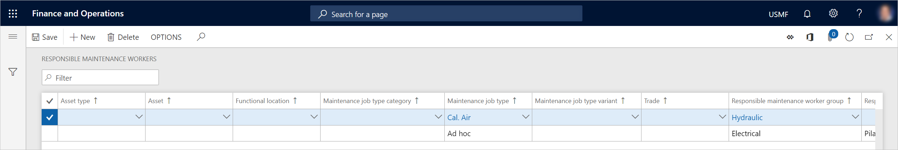

Zuständige Wartungsarbeiter
Important
Dynamics 365 for Finance and Operations hat sich zu speziell entwickelten Anwendungen entwickelt, mit denen Sie bestimmte Geschäftsfunktionen verwalten können. Weitere Informationen zu diesen Änderungen finden Sie im Dynamics 365-Lizenzierungshandbuch.
Zuständige Wartungsarbeiter können Anlagentypen, Anlagen, funktionalen Standorten, Wartungsauftragstyp-Kategorien, Wartungsauftragstypen, Wartungsauftragstyp-Varianten und Facharbeiten zugeordnet werden. Sie können in Arbeitsaufträgen und Wartungsanfragen verwendet werden, um eine Präferenz bzgl. des Wartungsarbeiters anzugeben, der für einen Arbeitsauftrag zuständig sein soll. (Jedoch sind diese Wartungsarbeiter nicht zwangsläufig die gleichen Arbeitskräfte, die für die Ausführung des Arbeitsauftrags eingeplant werden.) Die Nutzung dieser Funktion ist optional. Beispielsweise kann sie verwendet werden, um zuständige Arbeitskräfte oder Arbeitskraftgruppen für bestimmte Arbeitstypen oder Arbeitsbereiche auszuwählen.
Während eines Arbeitsauftrag-Lebenszyklus oder eines Wartungsanfrage-Lebenszyklus können die zuständigen Wartungsarbeiter geändert oder aktualisiert werden. Diese Änderung oder Aktualisierung kann z. B. mit einer Änderung des Wartungsanfrage-Lebenszyklusstatus oder des Arbeitsauftrag-Lebenszyklusstatus in Zusammenhang stehen.
Die Einstellungen auf der Seite Zuständige Wartungsarbeiter werden während der Arbeitsauftragsplanung nicht verwendet.
Note
In Asset Management können Sie auch bevorzugte Wartungsarbeiter einrichten, die Arbeitsaufträgen während der Arbeitsauftragsplanung zugewiesen werden können.
Bevor Sie zuständige Wartungsarbeiter einrichten können, müssen Sie die Arbeitskräfte und Wartungsarbeitergruppen einrichten, die zur Auswahl verfügbar sein sollen. Informationen darüber, wie Sie Arbeitskräfte und Wartungsarbeitergruppen einrichten, finden Sie unter Wartungsarbeiter und Arbeitskräftegruppen.
Zuständige Wartungsarbeiter einrichten
Wählen Sie Anlagenverwaltung > Einstellungen > Arbeitskräfte > Zuständige Wartungsarbeiter aus.
Wählen Sie Neu aus, um einen Datensatz zu erstellen.
Erstellen Sie zuerst eine Standardkonfiguration eines zuständigen Wartungsarbeiters oder einer zuständige Wartungsarbeitergruppe, in der Sie nur das Feld Zuständige Wartungsarbeitergruppe und/oder das Feld Zuständige Arbeitskraft festlegen. Lassen Sie die restlichen Felder leer. Diese Standardkonfiguration wird während der Arbeitsauftragsplanung verwendet, wenn keine andere, spezifischere Kombination dem Inhalt des Arbeitsauftrags entspricht.
Note
Wenn während der Erstellung einer Wartungsanfrage ein zuständiger Wartungsarbeiter oder eine zuständiger Wartungsarbeitergruppe zur Auswahl auf der Seite Alle Wartungsanfragen bereitgestellt wird, durchsucht Asset Management alle zuständigen Wartungsarbeiterdatensätze nach einer möglichen Übereinstimmung. Die spezifischste Kombination wird immer zuerst geprüft. Das bedeutet, Asset Management sucht als Erstes nach einer Übereinstimmung für das Feld Facharbeit. Wenn keine Übereinstimmung gefunden wird, sucht es nach einer Übereinstimmung für das Feld Wartungsauftragstyp-Variante. Wenn keine Übereinstimmung gefunden wird, sucht es nach einer Übereinstimmung für das Feld Wartungsauftragstyp usw. Wie Sie im Layout der Seite sehen können, bedeutet dieses Verhalten, dass Asset Management auf der Suche nach der spezifischsten Kombination jeden Datensatz von rechts nach links auf eine Übereinstimmung überprüft (zuerst Facharbeit, dann Wartungsauftragstyp-Variante, dann Wartungsauftragstyp, dann Wartungsauftragstyp-Kategorie, dann Funktionaler Standort, dann Anlage und schließlich Anlagentyp). Wenn keine Übereinstimmung gefunden wird, wird der Standarddatensatz, der keine Auswahl in diesen sieben Feldern hat, verwendet.
Die folgende Abbildung zeigt ein Beispiel der Seite Zuständige Wartungsarbeiter.
